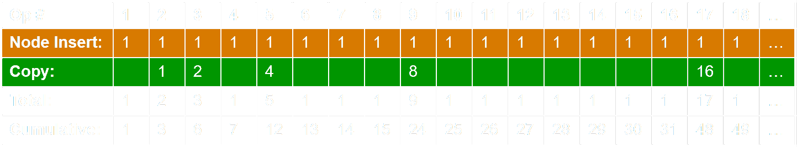
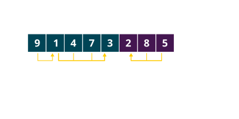
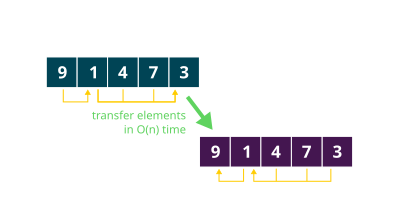
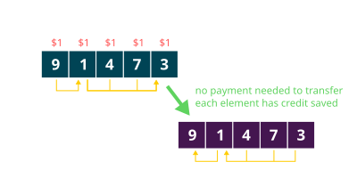

CS3460: Data Structures & Algorithms
Hash Tables
Sets / Dictionaries
Specification
insert(k)- insert the key $k$ into the setremove(k)- remove the key $k$ from the setfind(k)- find where key $k$ is located in the set
Implementation


Sets / Dictionaries
find(k) |
insert(k) |
remove(k) |
|
| $O(n)$ | $O(1)$ | $O(1)$ + find | unsorted array |
| $O(\lg n)$ | $O(n)$ | $O(n)$ | sorted array |
| $O(n)$ | $O(1)$ | $O(1)$ + find | unsorted linked list |
| $O(n)$ | $O(1)$ + find | $O(1)$ + find | sorted linked list |
| $O(1)$* | $O(1)$* | $O(1)$* | hash tables |
* subject to some expected or amortized qualifiers

Direct Access Table - Attempt 1

- Maintain a large array of booleans (or pointers)
- Key $k$ will be stored at location
A[k] - What is the runtime of
insert(k),remove(k), andfind(k)? $O(1)$ worst-case
Direct Access Table - Attempt 1
Drawbacks
- Space, and as a corollary initialization time
- How do we store strings? Images? Videos?
Hash Tables

- Maintain an array of size $m$
- Decide $h()$, a hash function
- Key $k$ is stored at index $h(k)$
- Example:
h(k) = (2971*k + 101923) % m
Hash Tables

- What happens when $h(k_1) = h(k_2)$?
- This is known as a collision
- This is inevitable as a larger set gets mapped to a smaller set according to the Pigeonhole Principle
Collision Resolution - Chaining

Collision Resolution - Chaining
- Each cell is the head of a linked list containing all elements colliding on that cell.
find(k): search the correct linked list - runtime depends on distribution of keysinsert(k): insert at the head of the correct linked list - $O(1)$ (not exactly)remove(k): remove from the correct linked list - $O(1)$ + find
Collision Resolution - Chaining
- Performance is good if keys are spread uniformly across table cells
- Hashing $n$ keys into a table of size $m$, on average, produces lists of size $n/m$. If $m = O(n)$, then the length of each individual list is $O(1)$ in expectation.
- Universal hashing gives a $O(1)$ expected guarantee for
find(k)
A (Not-So-) Quick Detour:
What Is Amortized Analysis?
How efficient is a hash table with chaining really?
find(k)- $O(1)$ "on average"; worst-case $O(n)$.- Universal hashing gives us $O(1)$ in expectation
remove(k)- takes $O(1)$ post-findinsert(k)- $O(1)$ usually (insert at the head of a linked list)- of course, if a linked list gets too long, we might want to resize
- doubling the size of the table would take $O(n)$ worst-case
A (Not-So-) Quick Detour:
What Is Amortized Analysis?
Imagine insertions take $O(1)$, except when doubling in size...

A (Not-So-) Quick Detour:
What Is Amortized Analysis?

The total cost of inserts up to size $k$ is
exactly $k$ for the nodes, and $\le 2k$ for the resizes
A (Not-So-) Quick Detour:
What Is Amortized Analysis?
So how is our version of insert different than a version that always takes 3 units in the worst-case?

A (Not-So-) Quick Detour:
What Is Amortized Analysis?
- What is amortization? It is a guarantee of average over a sequence of consecutive operations
- If
insert(k)usually takes $O(1)$ time, but every $n$ inserts, has to perform a $O(n)$ resize, it is more accurate to say that "on average,"insert(k)takes constant time. - We would call this $O(1)$ amortized time
- In general, an operation runs in $O(f(n))$ amortized time if any sequence of $k$ operations runs in $O(k \times f(n))$ time.
A (Not-So-) Quick Detour:
What Is Amortized Analysis?
Why do we care?
- Suppose we have the following two options for implementing a method
- $O(\lg n)$ worst-case time / operation
- $O(\lg n)$ amortized time / operation
- There is no difference, as far as we are concerned, as long as we use this method as part of a larger operation (or repeatedly). Calling this method $n$ times is going to take $O(n \lg n)$ worst-case in either case.
- The only difference is in the "real-time" response time of an individual operation (which may not matter). The amortized method can occasionally take longer.
A (Not-So-) Quick Detour:
What Is Amortized Analysis?
- One helpful approach: the "accounting" method.
- We mentally overcharge ourselves for earlier cheap operations to build up sufficient credit to pay for later expensive operations.
- Example: suppose we pay $50/month for gas, plus $1200 in December for annual vehicle maintenance
- Paying that $1200 all at once in December might be difficult financially
- Might be easier to budget an extra $100 per month so you have it ready when December arrives
- Budget to spend $150 per month, $50 for gas, $100 for savings
- By the time we reach December, we have enough "credit" to pay the maintenance cost
Simple Problem: Min Stack


- Let's implement a "min stack" supporing the following operations in $O(1)$ worst-case time:
push(x)pop()find_min(): return the minimum value present in the stack- One implementation:
- Keep a pointer to the current minimum
- Augment each element $e$ with a pointer to the minimum element below it (whatever was the minimum at the time $e$ was pushed)
Harder Problem: Min Queue
- Using a linked list or circular array, we can implement a standard FIFO queue supporting
enqueue(x)anddequeue()operations both in $O(1)$ worst-case time. - What if we want to support a
find_min()operation, which returns the value of the current minimum element in the queue? - Is it possible to implement a "min-queue" supporting
enqueue(x),dequeue(), andfind_min()all in $O(1)$ worst-case time?
Harder Problem: Min Queue
Let's try using a pair of back-to-back min stacks

What happens when the purple min stack becomes empty?
Harder Problem: Min Queue

When the purple min stack becomes empty, we spend $O(n)$ time to transfer the contents of the blue stack
into the purple stack — runtime for dequeue(): $O(n)$ worst-case
Harder Problem: Min Queue
Each enqueue(x) charges 2 credits: 1 for the push onto the blue stack, and 1 additional credit to be used to transfer to the purple stack at a later time

enqueue(x)andfind_min(): $O(1)$ worst-case timedequeue(x): $O(1)$ amortized time
A (Not-So-) Quick Detour:
What Is Amortized Analysis?
How efficient is a hash table with chaining really?
find(k)- $O(1)$ "on average"; worst-case $O(n)$.- Universal hashing gives us $O(1)$ in expectation
remove(k)- takes $O(1)$ post-findinsert(k)- $O(1)$ amortized (can we analyze this?)
Collision Resolution - Probing

Collision Resolution - Probing
- In the case of collision, we scan along a probe sequence.
insert(k): start at $h(k)$, keep scanning until we find an empty slotfind(k): start at $h(k)$, scan the probe sequence until we find the element or reach an empty slot
Collision Resolution - Probing
- Performance is generally good, as long as
- the table is slightly larger than $n$
- the hash function spreads keys unpredictably
Collision Resolution - Probing
Collision Resolution - Probing

Collision Resolution - Probing

insert(1) is complete, now let's remove(2)
Collision Resolution - Probing

Collision Resolution - Probing

remove(k): need to mark the location of the removed element with a tombstone
Collision Resolution - Probing
insert(k): Try to store key $k$ in $i = h(k)$ (if unoccupied). Scan along the probe sequence as long as $h(k)$ is greater to or equal to that of the current element. Once we reach an empty spot, or an element with a larger hash value, store it, and, if necessary, displace the element at that location.find(k): Scan along the probe sequence until we either find the element, find an empty spot, or find an element with a larger hash value.remove(k): Performfind(k), and after removing the element, adjust elements toward the left to fill the gaps

Collision Resolution - Probing
- All operations take $O(1)$ time, as long as the table is large enough (slightly larger than $n$), and we use a good hash function that spreads values out
- Our choice of probe sequence matters too!
- Great cache performance (compared to chaining)
Hash Tables in Practice
Uniq
Probe Sequences
- Linear probing: start at $h(k)$, continue to adjacent cells $h(k)+1, h(k)+2, h(k)+3, \dots$
- Great cache locality, very sensitive to unevenly distributed hash functions, constant expected runtimes for all operations, depending on load.
- Can be shown that with constant load factor, clusters have a maximum size of $O(\lg n)$ with high probability.
Probe Sequences
- Quadratic probing: start at $h(k)$, add successive values of a quadratic polynomial
- e.g., $h(k)+1^2, h(k)+2^2, h(k)+3^2, \dots$
- Slightly worse cache locality, but better addresses clustering problems
- Must carefully choose a quadratic that visits every possible location (Table size $m \in \mathbb{P}$ can help)
Probe Sequences
- Double hashing: start at $h_1(k)$, add successive multiples of a second hash function $h_2(k)$
- Certain properties must be true of the relationship between $h_1(k)$, $h_2(k)$, and $m$
- $h_1(k)$ and $h_2(k)$ must be pairwise independent, and all values of $h_2(k)$ must be coprime with $m$
Choosing a Good Hash Function
- Choose a completely random hash function?
- Choose a completely deterministic hash function?
- Our hash function should be consistent, yet unpredictable
Choosing a Good Hash Function
- $n$ = number of elements
- $m$ = table size
- $k$ = hashable key
- $C$ = maximum key value
- $a, b$ = random values
- $h(k) = k \mod m$
- known as modular hash
- $h(k) = \lfloor mk/C \rfloor$
- $h(k) = (ak) \mod m$
- $h(k) = \lfloor m(ka - \lfloor ka \rfloor) \rfloor$
- known as multiplicative hash, $0 < a < 1$
- $h(k) = (ak + b) \mod m$
- $h(k) = ((ak + b) \mod p) \mod m$
- $p$ must be prime or coprime with $m$
- universal hash, guarantees $O(1)$ expected time for
find(k)
What Next?
- How do we choose initial size of hash table?
- What do we do if we run out of space?
- How do we hash complex objects (strings, files)?
- Alternative collision resolution: Cuckoo hashing
- Applications of hashing outside of data structures